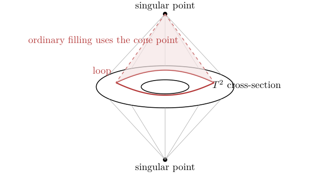

Poincare duality is one of the most satisfying facts about manifolds: on a compact oriented manifold, topology in dimension i is paired with topology in dimension n-i. Singular spaces are less polite.
Intersection homology fixes this by changing the chain complex rather than changing the space. The slogan is: cycles may approach singularities only in controlled dimension.
the torus suspension as a warning
Consider the suspension of a torus. Away from the two cone points it looks like a 3-manifold, but at either cone point the link is a torus rather than a sphere.
X = Sigma T^2, H_1(X; Q)=0, H_2(X; Q)=Q^2.

allowability
Intersection homology remembers when a chain uses the singular set too aggressively by imposing dimension bounds near each stratum.